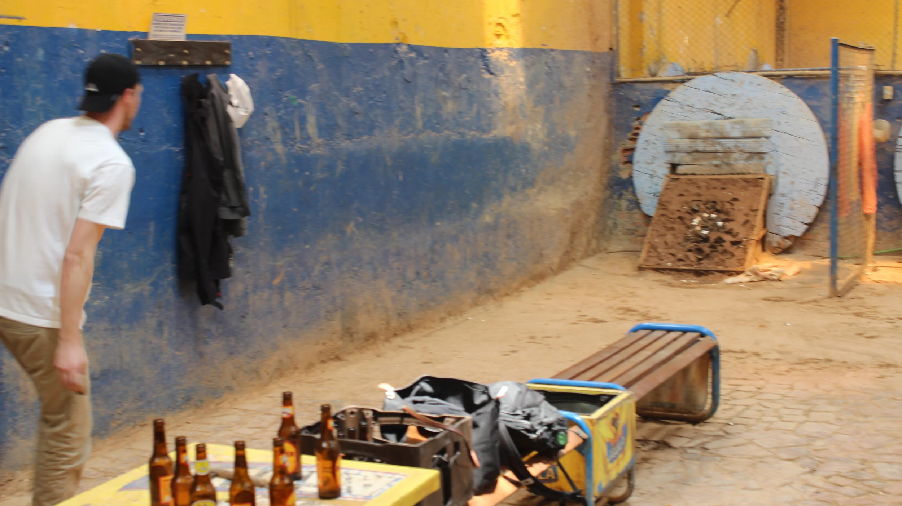
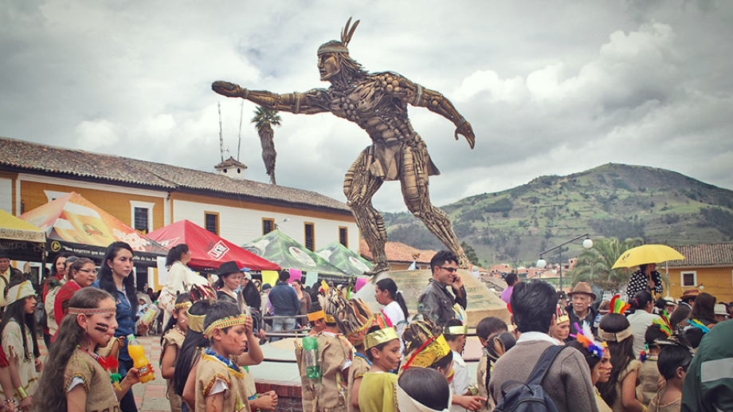

El tejo, también llamado turmequé, es el deporte nacional de Colombia y consiste en lanzar un disco metálico (tejo) hacia una cancha de arcilla,
a unos 17 a 20 metros de distancia, con el objetivo de embocar en un aro metálico llamado bocín,
alrededor del cual se colocan mechas con pólvora que estallan al ser golpeadas; el juego se disputa entre equipos que suman puntos según la precisión del lanzamiento:
1 punto por quedar más cerca del bocín (mano), 3 puntos por hacer estallar una mecha, 6 puntos por embocar directamente en el bocín (embocinada)
y 9 puntos si se logra embocar haciendo estallar al mismo tiempo una mecha (moñona), ganando el equipo que primero alcance los 27 puntos.

El tejo, también conocido como turmequé, tiene sus orígenes en la cultura muisca hace más de 500 años,
cuando se jugaba con un disco de oro llamado zepguagoscua en ceremonias y encuentros comunitarios en la región de Cundinamarca y Boyacá;
con la llegada de los españoles el juego se transformó, sustituyendo el oro por discos metálicos y manteniendo la esencia de lanzar hacia un blanco,
hasta convertirse en una práctica popular en todo el país, reconocida oficialmente como deporte nacional de Colombia en el año 2000 mediante la Ley 613,
lo que consolidó su valor cultural e histórico como símbolo de identidad y tradición colombiana.